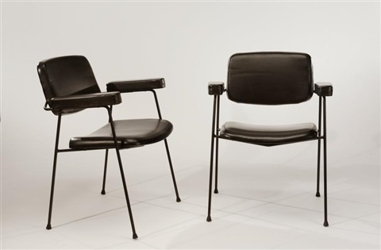
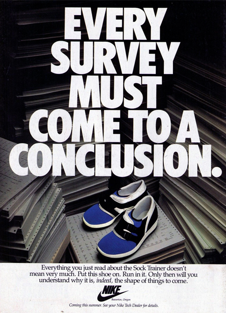

CM197 - 1958
This model CM197 armchair was designed by Pierre Paulin in collaboration with the publisher Thonet France in 1958. The base is in black lacquered steel, with a seat and back made from molded plywood. Notably, Paulin was commissioned to decorate the private apartments of President George Pompidou at the Palais de L’Elysee in 1970, and again, in 1983, to furnish the office of Francois Mitterand. Paulin’s work was influenced by his German roots, the early modernists, and, in particular, by American designers Charles and Ray Eames.
This model CM197 armchair was designed by Pierre Paulin in collaboration with the publisher Thonet France in 1958. The base is in black lacquered steel, with a seat and back made from molded plywood. Notably, Paulin was commissioned to decorate the private apartments of President George Pompidou at the Palais de L’Elysee in 1970, and again, in 1983, to furnish the office of Francois Mitterand. Paulin’s work was influenced by his German roots, the early modernists, and, in particular, by American designers Charles and Ray Eames.


SOCK RACER - 1985
The Nike Sock Racer is an example, produced originally as a lightweight marathon shoe and favored mostly by triathletes. Joanne Ernst, winner of the 1985 Hawaii Ironman, sported the Sock Racer and was later featured in the brand's early "cross-training" advertisements. With all the barefoot technology being sold to us as new today, it is important to remember this often ignored mid-80s experiment.
The Nike Sock Racer is an example, produced originally as a lightweight marathon shoe and favored mostly by triathletes. Joanne Ernst, winner of the 1985 Hawaii Ironman, sported the Sock Racer and was later featured in the brand's early "cross-training" advertisements. With all the barefoot technology being sold to us as new today, it is important to remember this often ignored mid-80s experiment.